Современного человека сложно удивить виртуальной или дополненной реальностями во всех их проявлениях ― к этому многие уже привыкли. Охота за покемонами на улицах разных городов уже ушла в небытие, а VR- шлемы испробовали даже старушки, несмотря на то что технология еще и далека от совершенства. Но мало кто знает истоки происхождения и путь развития виртуальной реальности от начала и до сегодняшних дней – для большинства она появилась не так уж и давно. На самом деле это неверное представление и сейчас мы расскажем вам, как все начиналось.
Первый стереоскоп был изобретен Чарльзом Уинстоном в 1837 году. Принцип работы устройства был таков: человек смотрит на два плоских изображения с разных точек и под разными углами в результате чего мозг создает объемную картинку. То есть можно сказать, что Уинстон почти 200 лет назад создал первый прототип примитивного VR-шлема а-ля Cardboard. Изобретение понравилось многим и на Уинстона посыпались предложения от кинематографистов, которые предлагали сделать стереоскопическими еще и фильмы. И именно кинематографисты дали дальнейший толчок развитию VR.
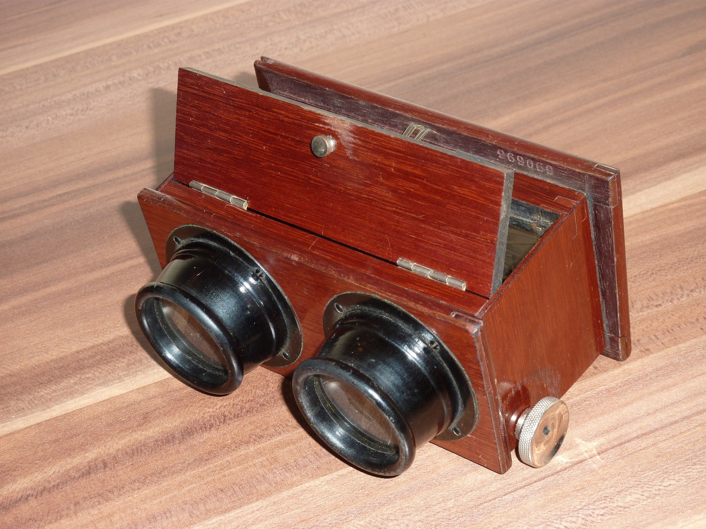
В 1957 году кинематографист Нортон Хейлиг разработал уникальное устройство, благодаря которому его называют «отцом виртуальной реальности», ― «Сенсораму». Внешне оно напоминало собой своеобразный игровой автомат с сиденьем и крохотным экраном. Хейлигом было отснято 6 короткометражек, в которые и должен был «погружаться» пользователь.
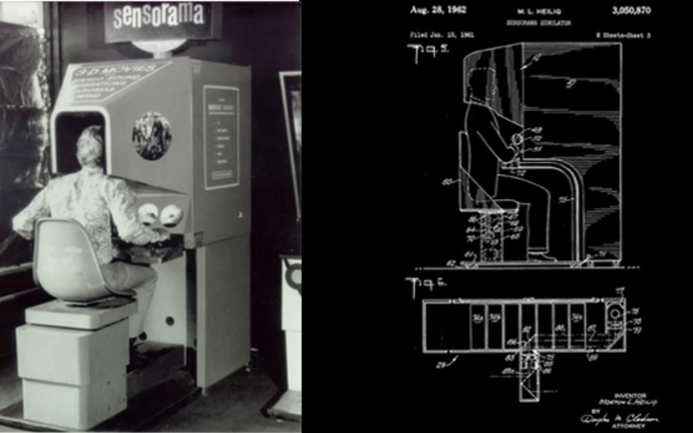
Причем «Сенсорама» передавала не только видео, но и звук, вибрации и запахи ― для того времени это был по-настоящему инновационный аттракцион. Однако большой популярности и дальнейшего развития он не получил ― техническое несовершенство да и сам формат погружения в VR оставляли желать лучшего.
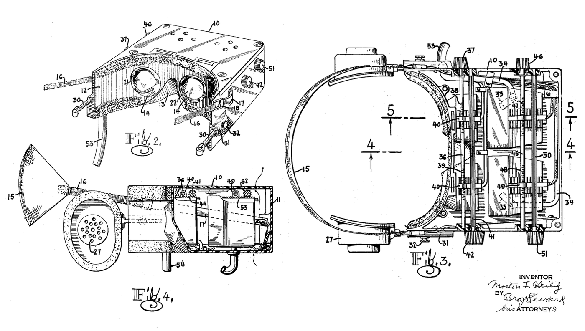
Интересен и тот факт, что в том же 1957 году Хейлигом был разработан и запатентован чертеж «телесферической маски», которая по праву может считаться прародителем современных VR-гарнитур. Однако дальше чертежа дело не пошло.
Так называлась первая система, позволяющая отслеживать положение головы пользователя в пространстве. Причем проект был не развлекательный, а засекреченный военный. Headsight предназначался для изучения таких мест, где личное присутствие человека было бы опасным для жизни или просто физически невозможным. Например, бункер, заполненный ядовитым газом. Устройство представляло собой видеошлем с магнитной системой отслеживания и внешними видео трансляционными камерами. Широкой публике, разумеется, устройство не демонстрировалось и в продажу никогда не поступало.
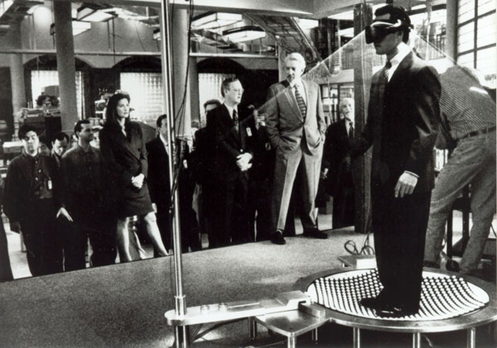
Ничего серьезного ― просто еще одна «ранняя версия» Cardboard, позволяющая наслаждаться объемными картинками. Устройство было выпущено в 1966 году.

Следующая важная веха развития технологии виртуальной реальности была создана профессором Гарвардского университета Айвеном Сазерлендом совместно со студентом Бобом Спроулом в 1968. Система представляла собой примитивный VR-шлем, который из-за своего огромного веса подвешивался к потолку. Конструкция грозно нависала над человеком за что и получила свое название.
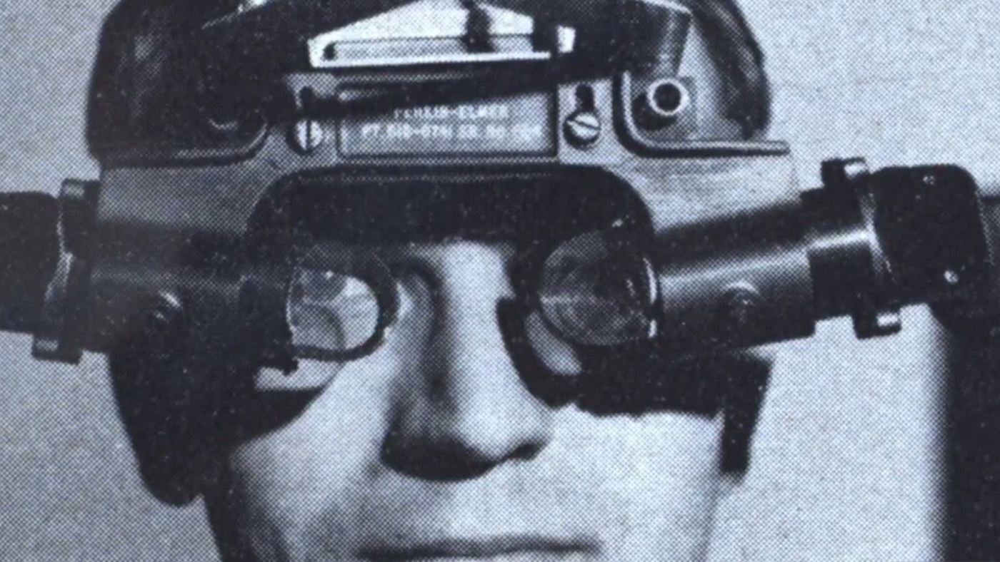
«Дамоклов меч» подключался к компьютеру и передавал на экран изображение. Графика, конечно же, была примитивной ― простые геометрические фигуры. Зато «Дамоклов меч», как и Headsight, мог отслеживать положение головы в пространстве.
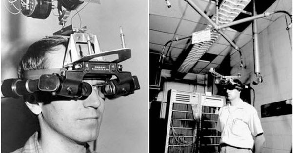
В 1978 году был сделан еще один очень важный шаг для развития технологии виртуальной реальности. Снятые на видеопленку улицы маленького городка Аспен, расположенного в штате Колорадо, были перенесены в VR и записаны на оптический носитель. Выбрав время года (зиму или лето), пользователь мог совершить VR-экскурсию по Аспену.
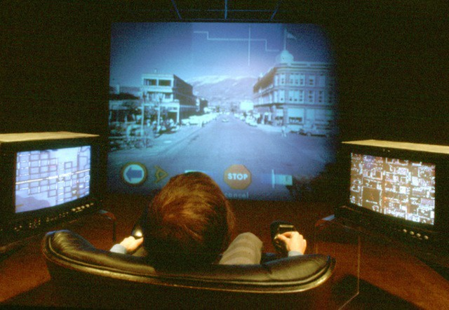
Стив Манн, которого считают отцом всех носимых умных гаджетов, в 1980 году создал первый прототип шлема дополненной реальности. Он представлял собой рюкзак-компьютер, носимый на спине, и видеошлем ― девайс уже очень сильно напоминал то, что мы можем видеть сегодня. В это же время для военных нужд создаются вот такие «забавные» VR- гарнитуры, призванные упростить управление самолетом и его боевыми системами для пилотов. Причем угол обзора в таком «динозавре» был 120 градусов, в то время как у большинства современных он не дотягивает и до 110.

Такое наименование получило устройство, созданное в 1984 году. Оно позволяло погружаться в виртуальную реальность вдвоем и взаимодействовать с искусственным миром с помощью первых многофункциональных контроллеров в виде перчаток. Из-за дороговизны популярности RB2 не получило.
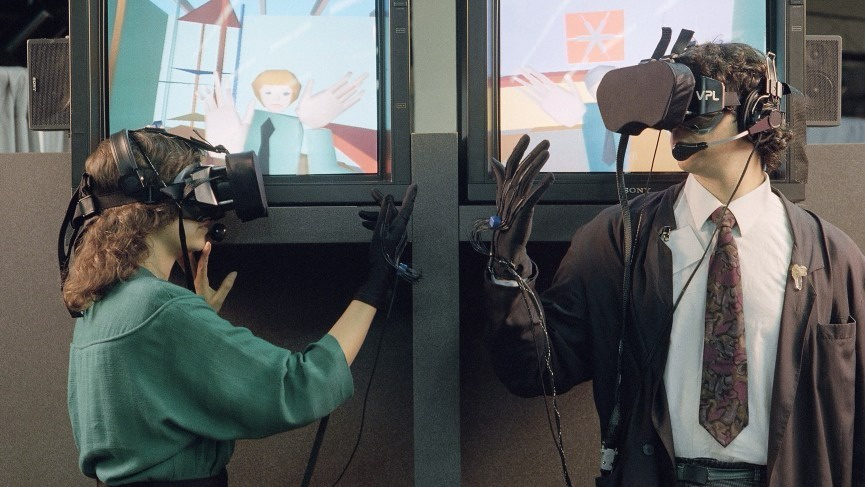
Годом позже был создан VR-шлем, который по своим характеристикам наиболее близок к современным устройствам. Разработкой гарнитуры занималось NASA и устройство было предназначено для научных, а не для развлекательных целей. С его помощью можно было, например, прогуляться по поверхности Луны или Марса.
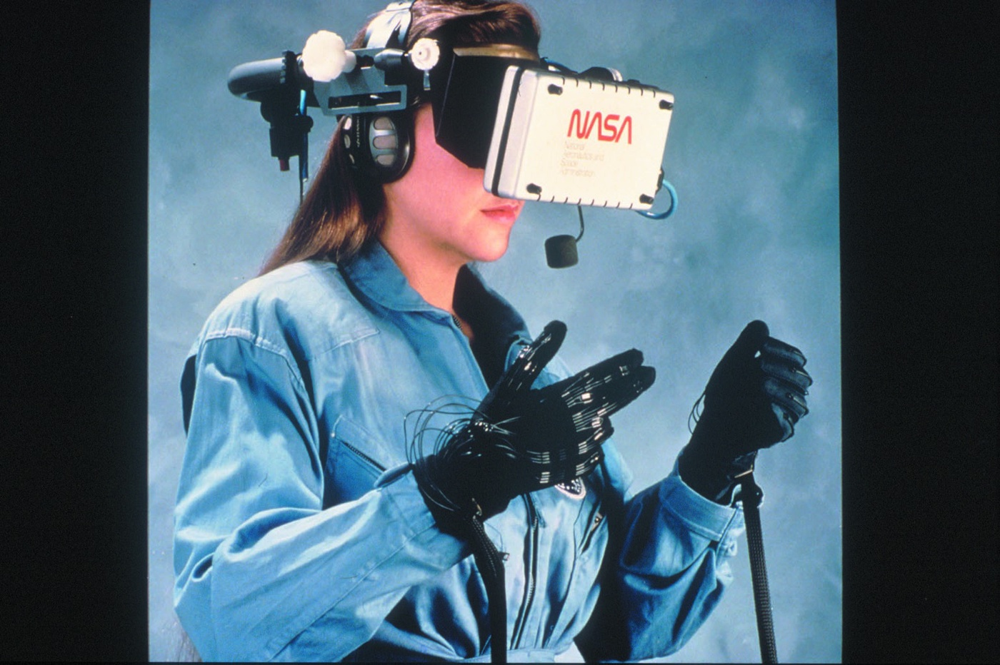
Интересная игровая система, позволяющая погружаться в VR, была создана в начале 90-х годов компанией Virtuality Group. Джойстик, микрофон, два LCD-дисплея в каждом шлеме и возможность играть по сети ― очень круто. Но низкое разрешение дисплея ― 276х372 сводило эффект погружения к минимуму.

Первый рабочий прототип был разработан студентами Иллинойского университета в 1992 году. Он представлял собой комнату, в которой внутренние стены служили отражающими экранами ― на них проецировались различные стереоизображения. Для того чтобы увидеть объемную картинку необходимо было надеть стереоочки. Отслеживание положение рук и головы пользователя, а также специальный контроллер для взаимодействия с VR-миром здесь тоже присутствовали. Качество изображения, возможность находиться в такой комнате сразу нескольким пользователям, свобода передвижения ― несомненные плюсы Cave. Но главный минус ― громоздкость системы: такое устройство явно не предназначено для домашнего пользования.
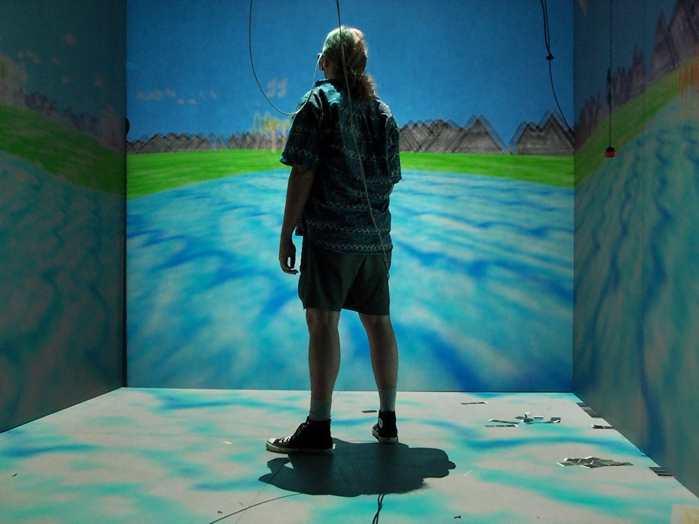
Следующий значимый проект – VR- шлем от компании Sega был представлен на выставке CES в 1993 году. Стильный дизайн, отслеживание положения головы, стереозвук ― все эти достоинства у геймеров восторга не вызвали ― морская болезнь, головные боли и прочие недостатки, возникающие во время игры, «похоронили» проект.
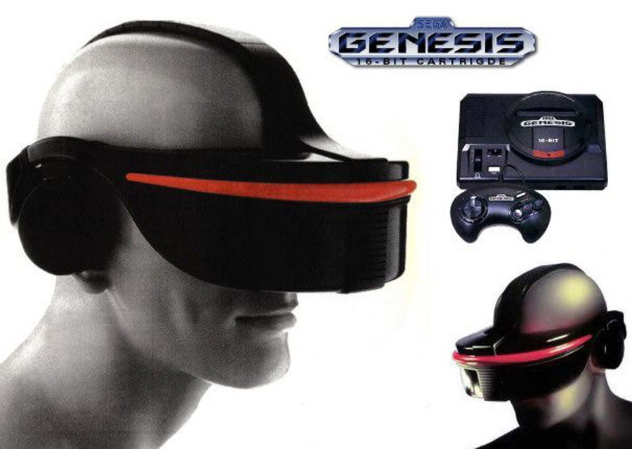
Следующая попытка популяризовать виртуальную реальность – шлем CyberMaxx выпущенный компанией Victormaxx в 1994 году. Два цветных дисплея с разрешением 505х230 ― неплохой результат для того времени. Но высокая стоимость и системные требования к ПК не позволили проекту развиваться и дальше.
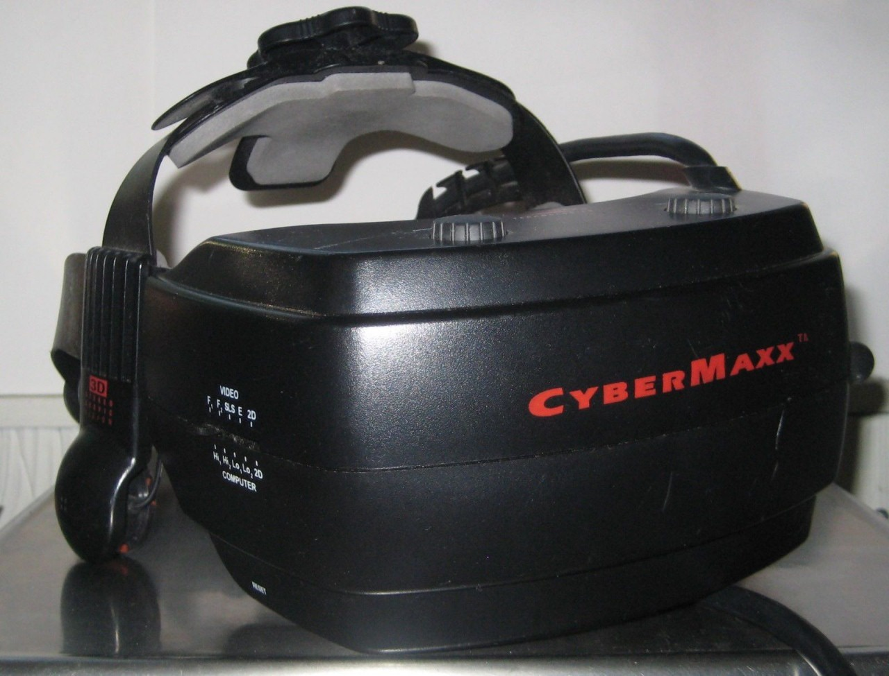
Годом позже компания Nintendo попыталась исправить ситуацию, предоставив вниманию широкой публики свою VR-гарнитуру под названием Nintendo Virtual Boy. Но два монохромных дисплея низкого разрешения и эргономика устройства, вызывающая боль в шее – очередной провал и неприятие шлема геймерами.
Одновременно с Nintendo Virtual Boy на рынке появилась еще одна интересная гарнитура I-glasses. Легкая, удобная, эргономичная (по сравнению с «Дамокловым мечом», например), но привязанная проводами к системному блоку. Разрешение дисплеев - 640х480.
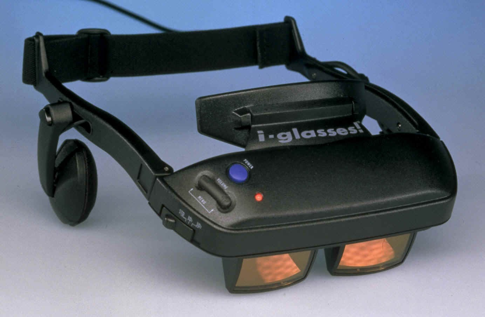
Это еще один VR-шлем в стильном продуманном дизайне и с шарообразным контроллером в комплекте. Низкое разрешение дисплеев 263х230 и прочие недостатки предыдущих моделей ― разработчики не учли ошибки конкурентов и наступили на те же грабли.
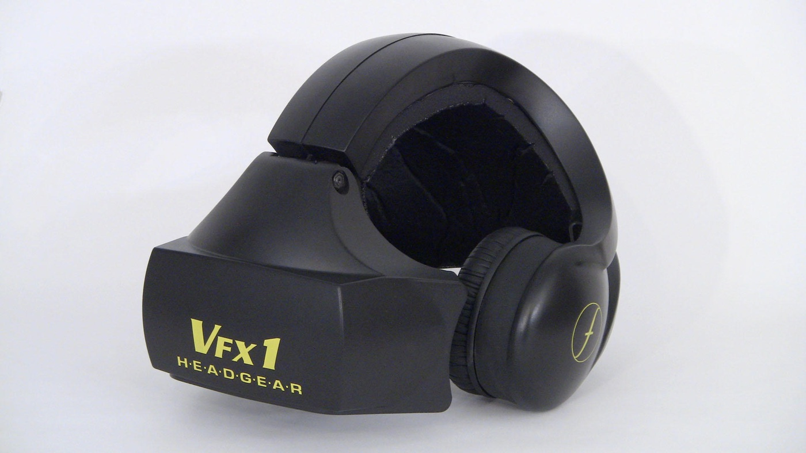
Спустя 2 года на американский рынок выходит гарнитура виртуальной реальности от Sony с запоминающимся названием Glasstron. Шлем был представлен в 3-х версиях, лучшая ― обладала разрешением дисплея 800х 600. Glasstron ― это в какой-то мере прародитель современного Sony PS VR. После этого наступил период затишья: все VR-проекты, ориентированные на развлечения, оказались убыточными, популярность начал набирать интернет, внимание разработчиков и общественности переключилось на него.
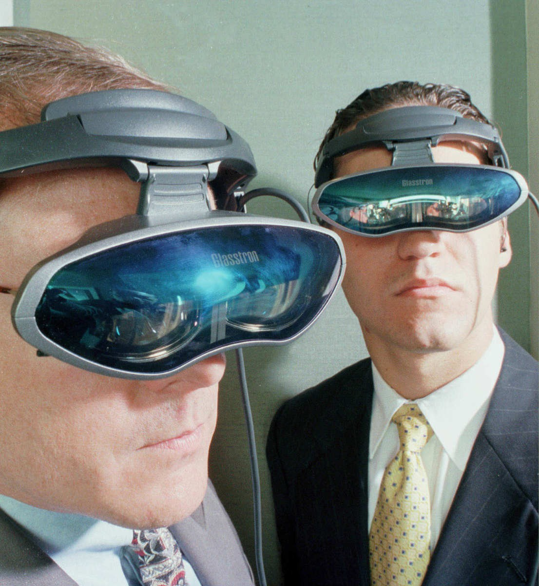
Сбор средств на краудфандинговой площадке Kickstarter 1 августа 2012 года на проект под названием Oculus Rift стал отправной точкой для дальнейшего развития VR технологии и индустрии в целом. Потребительская версия шлема Oculus Rift CV1 вышла лишь спустя 4 года и обладала разрешением 1080х1200 пикселей на каждый глаз и углом обзора в 110 градусов. По сравнению с VR-гарнитурами прошлого века это был громадный прорыв. Стоит упомянуть о том, что осенью этого года компания анонсировала также беспроводную гарнитуру Oculus Go, которая позиционируется как недорогое устройство для погружения в VR. А в 2018 году компания обещает предоставить для разработчиков первую версию своего нового устройства под названием Oculus Santa Cruz, которое должно превзойти все предыдущие детища компании.

В 2014 году два инженера корпорации Google David Coz и Damien Henry создали самый доступный образец устройства для погружения в VR из картона и нескольких линз. Разумеется такая «картонка» не является самодостаточной и для работы требует современный смартфон. С другой стороны стоимость Google Cardboard составляет около 100 рублей – для знакомства с VR-технологией лучше и придумать сложно. Daydream VR еще одна гарнитура от Google, которую условно можно назвать усовершенствованным Cardboard (Daydream гораздо круче и эргономичнее). В том же 2014 году был представлен и Samsung Gear VR, который работает по тому же принципу (требует смартфон), но обладает лучшими характеристиками и более высокой ценой.
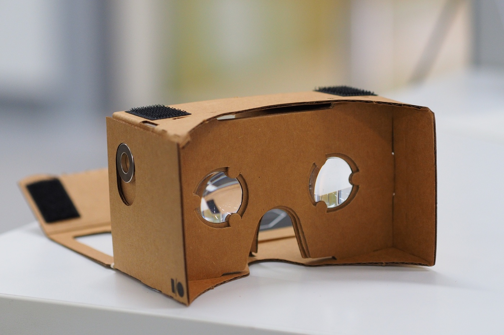
1 марта 2015 года тайваньский производитель смартфонов совместно с компанией Valve представили свою версию VR-гарнитуры, которая является одним из главных конкурентов Oculus. Правда большая часть характеристик этих двух гарнитур идентичны. Кроме того в середине ноября текущего года компания анонсировала новинку ― шлем VR-шлем HTC Vive Focus, который будет полностью автономным.

Платформа смешанной реальности (виртуальной и дополненной) была представлена крупнейшим разработчиком ОС вместе с гарнитурой Microsoft Hololens 21 января 2015 года. Данная платформа стала первой попыткой объединения разрозненных разработчиков в «единое целое» с целью стандартизировать, упростить и дать толчок дальнейшему развитию VR/AR технологий. Свои гарнитуры в рамках этой концепции представили такие высокотехнологичные гиганты как HP, Acer, Asus, Samsung, Dell и Lenovo.
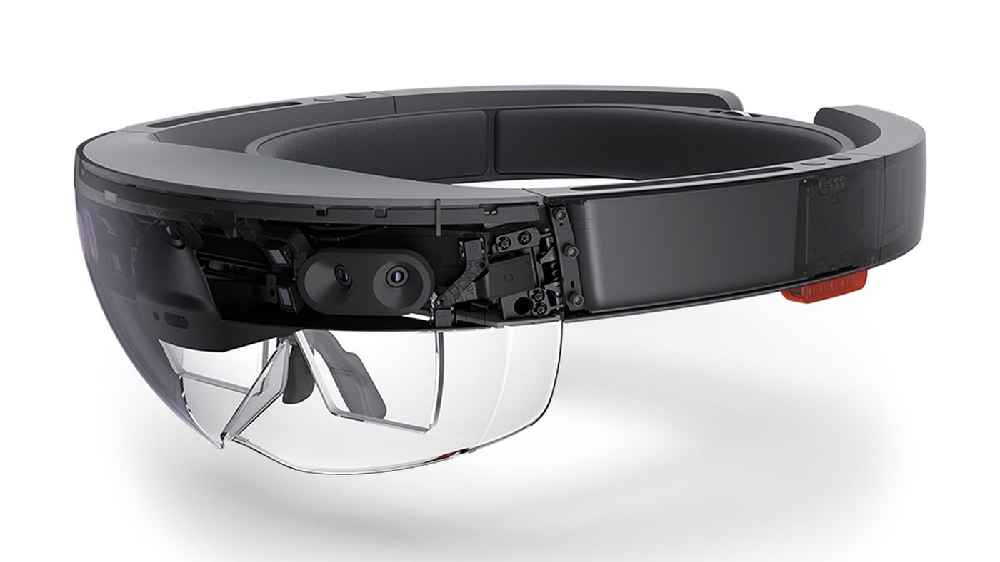
Позже всех в гонку VR-гарнитур вступила компания Sony, представив 13 октября 2016 года шлем, который работает совместно с любой игровой консолью Sony PS 4. Гарнитура обладает разрешением 1080х960 на каждый глаз, что немного хуже чем у HTC и Oculus. Зато Sony может похвастаться большим количеством развлекательного контента.
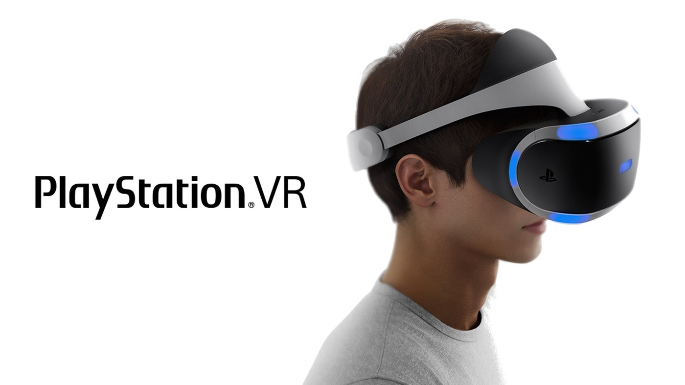
Загадочный стартап, про который более подробно написано здесь. Представляет собой инновационное устройство, которое по словам разработчиков изменит привычные нам интерфейсы и заставит отказаться от смартфонов, ПК и прочих «умных» устройств.
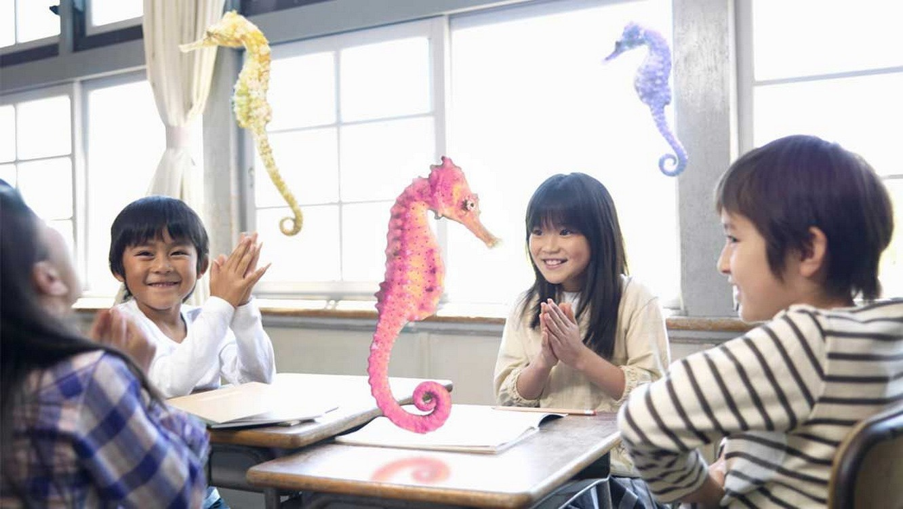
Как отмечено на сайте компании VR CORP – разработчика приложений и производителя устройств виртуальной и дополненной реальности [источник], основная цель использования VR-приложений состоит в том, чтобы позволить обучающимся глубже понять материал. Ученики смогут не только посмотреть на картинки или прочесть текст, но и увидеть что-то «вживую».
Одним из примеров подобных VR-приложений является The Body VR: Journey Inside a Cell [источник]. Эта образовательная платформа переносит пользователя внутрь человеческого тела, как клетку, путешествующую по кровотокам. Здесь можно узнать, как клетки крови распространяют кислород, ввести клетку вируса и увидеть, как именно будут здоровые клетки с ней бороться.
Использование виртуальной реальности удобно тем, что можно показать то, что недоступно для человека в обычной жизни: устройство человеческого тела или машины, полет в космос или в другую страну, провести опасную химическую реакцию или смоделировать ситуацию для задач по физике, а также многое другое [источник].
Формирование умений через модели ВР позволяет безопасно и не боясь ошибиться научить специалистов определенной работе, которая в обычной жизни представляет угрозу [источник]. Например, Холдинг «Росэлектроника» госкорпорации «Ростех» представил комплексный тренажер на основе технологии виртуальной реальности для саперов и пожарных. ВР система создает типовые ситуации проблем для отработки алгоритма разрешения в короткие сроки. Виртуальная среда обеспечивает реализм ситуации и позволяет пользователям оценить всю сложность и опасность [источник].
Виртуальная реальность позволяет собирать группы людей вместе для изучения общего материала. Таким образом, обычные телефонные разговоры отходят на задний план. Данную разновидность применения ВР можно использовать для путешествия компанией, изучения иностранного языка или проведения групповой работы.
Проект «ClassVR» предоставляет такую возможность. Эта инновационная система разработана специально для массового обучения. Автономность гарнитуры позволяет преподавателю руководить процессом. Простота управления – легко запускать материал, направлять учеников и отслеживать их прогресс. Библиотека материалов включает в себя порядка 900 заданий по разным темам, а также позволяет загрузить свои файлы [источник].
Каждое ВР приложение имеет свою логику, которую необходимо запрограммировать. При изучении процесса разработки учащиеся смогут разобрать понятия и формулы, необходимые для их проекта, а также явления, которые логически должны быть одно за другим.
На данный момент имеется огромное количество различного оборудования для ВР, рассмотрим его классификацию в зависимости от реализованной технологии [источник].
Шлем в базовой комплектации содержит в себе: устройство, проецирующее две одинаковые картинки для двух глаз, закрытый шлем для того, чтобы не попадал лишний свет. ВР шлемы делятся на три типа:
Данный тип ВР шлема представляет из себя громоздкую конструкцию. Он подключается к компьютеру или консоли высокой мощности. Содержит также контроллеры, датчики движения, джойстики и огромное количество проводов.
Шлем виртуальной реальности HTC Vive на данный момент является лучшим ВР устройством для компьютера. В начале 2016 года на ежегодной выставке MWC (Mobile Word Congress — это крупнейшая в мире выставка мобильной индустрии) компания HTC совместно с легендарной Valve представила свой шлем под названием Vive. Суть устройства аналогична конкурентным решениям, однако с HTC Vive можно перемещаться в виртуальном пространстве, то есть физически «прогуливаться» по комнате, при этом совершая те же движения в VR.
Шлем был представлен как наработка – с множеством проводов и дополнительных устройств, сложной установкой и настройками, однако в скором времени HTC Vive был представлен для продажи уже как комплект: аккуратное устройство с проводами, адаптерами, понятной инструкцией сборки и установки.
Шлем Oculus Rift является более упрощенной версией HTC Vive. Имеет упрощенную настройку, не такую громоздкую форму, а также меньше оборудования, соответственно, данный шлем дешевле. Отличительная особенность в том, что данный шлем имеет упрощенное использование во всем, однако качество претерпевает негативные изменения.
Также существуют шлемы без контроллеров, один из них OSVR HDK различных версий. Соответственно, в этом шлеме невозможно отображение движений, только движение головы. OSVR HDK является самым дешевым и простым вариантом для новичков.
Мобильная ВР отличается тем, что устройство выхода в виртуальный всегда рядом. Остается лишь купить сопутствующее оборудование. Однако телефон должен отвечать требованиям: он должен быть современным, разрешение должно быть больше, чем 640 х 1136 пикселей (можно использовать телефоны даже с меньшим разрешением, но при увеличении картинки встроенными линзами, изображение будет нечетким и расплывчатым), возможность изменения ориентации экрана, магнитный датчик (данное условие необязательно, но может значительно упростить пользование).
Гарнитура, в которую будет вставляться телефон включает в себя следующее:
• крепление для смартфона;
• линзы для увеличения экрана смартфона;
• механизм для регулировки расстояния между линзами;
• механизм для регулировки расстояния между линзами и смартфоном;
• ремни для крепления всей конструкции на голове.
На данный момент данные гарнитуры разнообразны по дизайну и цене, однако все это одно и тоже – пластиковая коробка с возможностью вставки мобильного устройства.
Нельзя не упомянуть Google Cardboard. Создатели этого проекта решили доказать, что в качестве гарнитуры можно использовать обычный картон, сложенный особым образом и оснащенный линзами. Проект оказался настолько успешным, что компания Google всерьез принялась за его развитие и начала продажи одноименной гарнитуры, а рынок заполнился её бесчисленными копиями самых разных цветов, цен и качества.
Такие очки обрабатывают изображения самостоятельно и работают под управлением специальных операционных систем. Для таких очков не
нужен ни компьютер, ни телефон. Благодаря чувствительным контроллерам устройство легко распознает действия пользователя.
HTC Vive Focus является самым ярким примером. Готовое беспроводное решение премиум-класса, направленное на конкретную задачу
конкретного приложения. Vive Focus предоставляет широкие возможности: отслеживание по 6 осям, качественный звук и красочные дисплеи.
Oculus Go. Содержит в себе лишь 5 элементов:
- Гарнитура
- Контроллер
- Адаптер питания
- Аккумулятор
- Вставка для очков
Гарнитура оснащена самыми современными линзами для передачи четкого изображения и ярких цветов, дышащей тканью, которая не натирает. Также в гарнитуру встроены драйверы пространственного звука.
HTC Vive Focus лишь на немного отличается от Oculus Go. Основное отличие в том, что HTC Vive Focus имеет более широкое и качественное изображение и высокую частоту обновления системы. Кроме того, существуют более дешевые аналоги, такие как SulonQ, DeePoon, AuraVisor.
3D дисплеи используются в основном для систем ВР, приближенных к полному погружению в ВР, например, Cave Automatic Virtual Environment. Этот класс устройств позволяет сформировать объемный объект на экране за счет специальной проекции. Такие дисплеи обычно содержат несколько плоских или изогнутых экрана и задействуют механизм восприятия объема путем динамически изменяющегося изображения, исходя из координат глаз пользователя.
Данная технология хороша тем, что она не изолирует пользователя от мира, как шлемы, она позволяет ему ориентироваться в пространстве, что положительно влияет на организм человека, например, отсутствуют симптомы: головокружение и тошнота, что свойственно некоторым шлемам ВР [источник].
Перчатки виртуальной реальности – это своеобразный контроллер, основанный на возможностях человеческой руки. Такое устройство позволяет с наибольшей точностью определять положение руки, а также получать корректную обратную связь при игре или просмотре динамических роликов.
Перчатки обеспечивают 10 степеней свободы. Такой контроллер подходит как для компьютеров, так и для мобильных устройств. Одним из примеров являются перчатки CaptoGlove. Они могут использоваться не только как устройство для изучения виртуальной реальности, но и как устройство управления телефонами или персональными компьютерами. Как утверждают создатели, CaptoGlove способны помочь научиться управлять беспилотными системами или помочь восстановить физическое состояние после травмы.
Дополнительная гарнитура помогает устройствам виртуальной реальности лучше распознать движения и положение пользователя в
пространстве. Примеров подобных устройств очень много.
Джойстик-брелок. Подобное маленькое устройство обычно кладут как подарок к ВР шлему, однако его можно купить и отдельно.
Он также выполняет роль контроллера, но с небольшими неточностями в распознавании движений.
Обычный джойстик и Bluetooth-джойстик. Обычные джойстики подключаются к устройству посредством провода, поэтому существуют
некоторые ограничения: чтобы подключить такой котроллер к телефону, необходимо приобрести еще пару проводов. Bluetooth-джойстики
в этом смысле проще, они не обременены большим количеством проводов, но выполняют те же функции.
Руль. Руль имеет те же характеристики, что и обычный руль в авто, также в комплект может быть включена коробка передач.
Такие рули имеют силовую обратную связь, т.е. полностью имитируют наезд на кочки и ямы.
В настоящее время контроллеры начинают приобретать различные формы: оружие, жилет, ботинки, наколенники и налокотники, ракетки,
коврики и даже гитары.
В соответствии с классификацией [источник] охарактеризуем далее типы ВР-систем в зависимости от применяемого оборудования и дополним эту классификацию другими известными типами систем.
Этот тип подразумевает наличие трех факторов:
- Симуляция окружающей среды с высокой степенью детализации
- Специализированное оборудование, способное распознавать действия пользователя и реагировать на них динамически в режиме реального
времени
- Высокопроизводительный компьютер, соединенный с оборудованием, который запускает приложение и обеспечивает его логическую работу.
Идеальное полное погружение включает в себя следующие составляющие:
- Визуальная картинка
- Звук
- Обратная тактильная связь
- Симуляция вкуса
- Симуляция запаха
- Положение человека в пространстве
На данный момент реализованы полностью лишь первые две составляющие, и третья находится на стадии разработки. В свою очередь
Обратная тактильная связь делится на следующие типы:
- Силовая. Например, в симуляторах обучения вождения у руля чувствуется тактильная отдача при столкновениях или резких торможениях,
она позволяет почувствовать давление на руки.
- Вибротактильная. Самый распространенный тип, который используется в мобильных телефонах и игровых джойстиках.
- Самый малоизвестный тип – ультразвук. На современном рынке есть лишь несколько подобных решений. По задумке благодаря
ультразвуковым волнам пользователь сможет почувствовать текстуру и форму объекта.
- Термальная связь позволяет почувствовать холод или тепло через используемое оборудование, например, джойстики.
- Самый точный способ передачи ощущений – электростимуляция. Электрические волны позволяют почувствовать прикосновение или удар
в определенных частях тела.
Существует множество проблем развития всех составляющих полного погружения. Самая большая из них: все составляющие требуют прохождения большого объема данных через контроллеры и шлем, а значит необходимо большее количество проводов и атрибутов. Атрибуты же должны быть более чувствительными. Все это делает конструкцию громоздкой и неуправляемой. Таким образом, можно сказать, что виртуальных систем действительно полного погружения не существует [источник].
Рассмотрим несколько примеров проектов, близких к системам ВР полного погружения.
Cave Automatic Virtual Environment. Как понятно по названию данный проект имеет форму «пещеры» – комнаты с 3-6 проекторами для
соответствующего числа стен. Пользователи благодаря 3D очкам могут увидеть 3D объекты, а также взаимодействовать с ними.
Инфракрасные камеры способны отследить движения пользователя и тут же отреагировать на них [источник].
The Void. Концепция проекта – виртуальный развлекательный центр. Создатели проекта сотрудничают с Disney и разрабатывают проекты
на основе известных фильмов. Технология проекта следующая: пользователь находится на «сцене» в шлеме, специальном костюме,
наушниках и с датчиками движения [источник].
AlloSphere является научно-исследовательским центром, который включает в себя трехэтажный куб со сферой внутри. Такая форма
позволяет звуку полностью окутывать пользователя, а также звук проходит без эхо-сигнала. Кроме того, сфера создает максимально
возможное поле зрения [источник].
На данный момент самым современным и наиболее обсуждаемым является проект Илона Маска Neuralink. Технология еще не вышла на
рынок и ожидается только через 15-20 лет. Задача этого проекта – объединить мозг человека и компьютер. Предполагается, что
будут созданы 4 чипа, которые можно будет установить в мозг человека. Посредством этих чипов будет проводиться стимуляция нейронов.
По словам самого Илона Маска Neuralink сможет восстанавливать поврежденные участки мозга человека. Прототипы таких чипов уже
испытаны на обезьянах и крысах [источник].
К данному типу относятся системы с симуляцией изображения и звука и контроллерами. Такие системы не охватывают все требования к ВР, однако они превосходят другие медиа устройства, что позволяет им быть причастными к ВР. К ВР без погружения относятся, например, 3D модели объектов, которые можно двигать и увеличивать.
Такие технологии позволяют пользоваться ВР приложениями с элементами социальной сети. Самыми яркими примерами являются Second Life и Minecraft. Они не позволяют полностью погрузиться в виртуальную среду, однако здесь хорошо настроен режим совместной работы. Обе игры имеют одну концепцию – создание своего виртуального пространства. Second Life предоставляет графику более схожую с реальным миром, например, персонажи выглядят как люди. В данной игре нет глобальной цели, здесь можно делать что угодно, нет необходимости зарабатывать очки или прокачивать персонажа. Можно участвовать в ролевых играх или создавать свои сообщества. В Minecraft графика имеет форму пиксельной игры. Принципиальное отличие в том, что данная игра имеет структуру конструктора. Здесь важно развивать персонажа и искать определенные материалы для постройки чего-либо.
Приложения такого типа используют язык Virtual Reality Markup Language, аналогичный HTML. Данная технология устарела, однако все еще пользуется интересом у компании Facebook. Возможно, в будущем виртуальная реальность также будет строиться на основе интернет-технологий.
Веб-реализация виртуальной реальности – основоположник для всех ВР устройств. Благодаря нему сейчас можно вывести ВР на смартфон, компьютер или телевизор.
Участники группы Mozilla VR совместно с разработчиками браузера Google Chrome презентовали версию 1.0 спецификации WebVR API [источник]. Стандарт претерпел многочисленные изменения и улучшения по сравнению с первоначальной версией. Появился язык разработки Mozilla A-Frame (как HTML и XML) для создания кроссплатформенных VR-приложений. Визуально это выглядит как веб-страница, которая по своей сути представляет трёхмерное изображение, по которому можно перемещаться и с объектами которого можно взаимодействовать. Также данный язык позволяет создавать свою среду ВР и внедрять ее в свои сайты. Сама работа с возможностями фреймворка выглядит как работа с обычным HTML-документом. Mozilla A-Frame позволяет загрузить объект на «сцену», изменить его масштабирование, цвет, расположение, движение, свет и источник света.
Также уже есть устаревшие инструменты такие, как Vizor и Responsive WebVR. Второй используется также как Mozilla A-Frame – работа с HTML-документом, первый же имеет меньше возможность, но позволяет легче построить 3D модель.
ВР без погружения Представляет собой среду с высококачественным изображением и звуком, контроллерами. Виртуальный мир транслируется на экран широкого формата. Отвечает не всем критериям ВР, но в отличии от стандартных средств мультимедиа, позволяет прочувствовать и познать искусственно созданный мир.
Интерактивная 3D-анимация – одно из самых сложных направлений виджеинга. Во-первых, необходимо подготовить материал для анимации (модели, текстуры, движения). Во-вторых, надо продумать, каким образом будет осуществляться взаимодействие с этим материалом в режиме реального времени (скажем, с помощью мыши, клавиатуры, джойстика, вебкамеры и т.д.) и как это взаимодействие скажется на окружающих объектах.
Инструмент для работы с анимацией должен быть простым в использовании и достаточно быстрым, чтобы можно было обрабатывать материал с высоким разрешением в реальном времени.
Для того, чтобы разработать 3D контент, необходимо рассмотреть следующие вопросы:
- Подготовка цифрового контента: подготовка серии изображений, отображение их на полигон, который находится перед камерой (такие изображения обычно называют спрайтами).
- Подготовка упрощённых полигональных моделей (с текстурами), некоторым из них можно задать движения (например, поворот). Затем можно будет экспортировать модели в файл, и
работать с ними в специальных программах.
- Создание простой 3D-модели в реальном времени (например, деформацию объекта или систему частиц).
- Видео (или неподвижные изображения) можно объединить с 3D-контентом, и использовать их в качестве фона или текстур.
- Аудио можно использовать для создания фоновой музыки или сопровождения некоторых событий. Также посредством аудио можно управлять поведением 3D-моделей в реальном времени.
- Создание интерактивности.
- Управляющие данные для цифровой модели можно получать от мышки, клавиатуры, джойстика или даже по сети. Например, можно управлять деформацией 3D-модели с помощью мыши,
или использовать кнопку на клавиатуре, чтобы вызвать заранее подготовленное движение (например, боевой удар).
- Улучшение визуализации в реальном времени.
- Большинство 3D-форматов хранит самую базовую информацию о модели. В интерактивной анимации можно улучшить качество рендеринга, используя специальные инструменты или
программирование (например, можно генерировать в реальном времени текстуры и тени).
Все инструменты для создания интерактивных 3D-приложений можно разделить на две категории: среды программирования и средства визуального программирования.
Среды программирования
- Самый простой пример 3D-анимации – это обычная компьютерная игра. Большинство компьютерных игр написано на C++, потому что у этого языка практически нет ограничений
и он наиболее эффективен.
- Скриптовые языки, такие как ActionScript или Processing. Но они слишком медленны для работы со сложной 3D-графикой.
Средства визуального программирования
- Эта категория инструментов создана для «непрограммистов», чтобы свести необходимость программирования к минимуму. Примером таких инструментов служат PureData, Max/MSP
с Jitter, Isadora. Почти все эти инструменты основаны на понятии «узла». Узлы обеспечивают некую функциональность. А виджею нужно только связать эти узлы таким образом,
чтобы добиться желаемого результата.
- Однако большинство этих инструментов работают только с аудио и видео информацией. Они не предоставляют возможности создания анимированного 3D-контента. Например,
они не позволяют импортировать сложные 3D-форматы или создавать даже простые 3D-модели в реальном времени и вообще обладают довольно ограниченными возможностями рендеринга.
- TouchDesigner. Это инструмент визуального программирования, в котором особое внимание уделено работе с 3D-моделями в реальном времени. Он позволяет импортировать
FBX (формат 3D-моделй Maya). Также можно работать с 3D-примитивами (сфера, тор и т.д.) и применять к ним различные операции
(деформацию, скручивание и т.д.). В TouchDesigner есть поддержка рендеринга в реальном времени (так называемых, шейдеров реального времени и языка GLSL).
Таким образом, можно создать интерактивное приложение с богатой 3D-анимацией, даже не смотря на то, что программа появилась сравнительно недавно и ещё находится
на стадии бета-версии, а число её пользователей невелико. Бесплатную версию TouchDesigner можно скачать с сайта http://www.derivative.ca/.
- Agisoft PhotoScan. В программе Agisoft PhotoScan реализована современная технология создания
трехмерных моделей высокого качества на основе цифровых фотографий.
Для реконструкции 3D модели объекта Agisoft PhotoScan позволяет использовать
фотографии, снятые любыми цифровыми фотокамерами с любых ракурсов (при условии,
что каждый элемент реконструируемой сцены виден по крайней мере с двух позиций
съемки). Процесс создания трехмерной модели полностью автоматизирован.
Для моделей с заданным масштабом, Agisoft PhotoScan также позволяет измерять
расстояния и рассчитывать площадь поверхности и объем. Масштабирование модели
производится на основании предварительных измерений в пределах реконструируемой
сцены.
Для данного проекта был использован Agisoft PhotoScan для создания 3D модели очков виртуальной реальности, инструкция для которых находится в разделе 3 (Практическая работа).
Однако, Agisoft PhotoScan программа платная, а демо-версия имеет одно существенное ограничение - нельзя сохранить проект. Видео с примером созданной модели:
Для работы с Agisoft PhotoScan можно воспользоваться видео-курсами:
VR-видео сегодня используют везде и по-разному — от спецпроектов крупных компаний до обычных видеоблогов на Youtube. В марте 2017 года в компании Facebook сообщили, что пользователи загрузили в соцсеть более миллиона видеороликов в 360°.
Видео в 360° получаются с помощью специальной камеры с несколькими fish-eye (рыбий глаз, англ) линзами, направленными противоположно друг другу. Чтобы получить сферическую картинку, достаточно двух линз с углом обзора в 180°. Чем больше объективов, тем качественнее получится картинка.
Сегодня на рынке чаще всего встречаются модели с шестью линзами — этого хватит, чтобы получить отличное изображение с разрешением в 4К.
Все видеопотоки после съёмки необходимо синхронизировать, чтобы зритель не увидел «швов». Чем больше линз в камере, тем сложнее будет склеить картинку. У некоторых моделей есть функция автоматического сшивания, в других же видео придётся сшивать самому. Значение имеет и угол обзора — когда видеопотоки перекрывают друг друга, изображение получается более «гладким».
Сферической камерой можно управлять дистанционно — на смартфоне — с помощью специальных приложений от разработчиков.
Как смотреть видео 360°:
- через декстоп с помощью стрелок и компьютерной мыши,
- через мобильные устройства, наклоняя и поворачивая девайс,
- с помощью VR-шлема.
В конце сентября 2017 года Opera выпустила бета-версию первого браузера с медиаплеером для VR-видео. С выходом новой версии Opera Developer смотреть видео 360° через компьютер станет удобнее: браузер будет автоматически распознавать подключенную VR-гарнитуру.
Держите палец перед носом, сфокусируйтесь на нём. Поочередно закройте левый и правый глаза. Замечаете, как палец двигается в сторону, в зависимости от того, каким глазом вы смотрите? Это и есть эффект параллакса. Если вы теперь переведёте взгляд с пальца на фон, то увидите, что картинка меняется не так значительно. Из этого делаем вывод — ближайшие к нам объекты сильнее всего подвержены этому эффекту.
В веб-дизайне часто применяется техника параллакс-скроллинга. Посмотрите на лендинг Sony. Объекты движутся с разной скоростью и по разным траекториям, накладываются друг на друга. Фон — самый «медленный» объект. Так получается объемное изображение.
Эффект параллакса касается и VR-видео. Дело в том, что внутри каждого объектива есть своя беспараллаксная точка. Вращение камеры вокруг этой точки позволяет свести к минимуму все нежелательные искажения при съёмке обычных фотопанорам.
А когда мы снимаем панорамное видео, причём с двух, трёх, шести камер, мы имеем дело с несколькими беспараллаксными точками. Из-за того, что камеры находятся на некотором расстоянии друг от друга, изображения видеопотоков отличаются. Особенно, когда снимаемый объект располагается очень близко к камерам. Образуются швы.
Поэтому панорамные видео необходимо «сшивать», минимизируя эффект параллакса. Некоторые камеры для создания VR-контента выполняют функцию сшивания видеопотоков автоматически, и это значительно облегчает работу.
Выбирайте просторное помещение. Если снимать в тесной комнате, зритель будет испытывать дискомфорт, особенно если смотрит видео в очках виртуальной реальности.
Важна динамика кадра. Незачем снимать панораму статической комнаты с одним персонажем, картинка должна быть интересна со всех углов. Пропишите сценарий видео, добавьте больше действия и интересных деталей.
Выстраивайте хорошее ровное освещение. Это необходимо для того, чтобы на выходе сферическое видео правильно «склеилось».
Не снимайте видео «с рук». Палец неизбежно попадёт в кадр и будет выглядеть непропорционально большим из-за особенностей линз типа fish-eye («рыбий глаз»). Используйте штатив или монопод. Если по вашей задумке камеру необходимо постоянно передвигать — желательно купить или арендовать стедикам для лучшей стабилизации видео.
После съёмки вы можете обработать панорамный ролик в специальном видеоредакторе. Если в вашей камере нет функции автоматического сшивания всех видеопотоков, вам обязательно нужно сделать это вручную. Но и склеенное видео при желании можно отредактировать — например, «подрезать», скорректировать цветовую гамму и добавить надписи. Кстати, старайтесь помещать текст ровно по линии горизонта — так вам удастся избежать визуального искажения букв.
К сожалению, во встроенном видеоредакторе на Youtube пока нет возможностей для работы над VR-контентом. Одна из самых популярных программ для сшивания и обработки видео в 360° — Kolor Autopano Video. Для некоммерческого использования юзеры могут скачать бесплатную программу VideoPad. Она доступна не только для настольных компьютеров, но и для смартфонов с операционными системами iOS и Android.
Если вы планируете заниматься панорамными видео на профессиональном уровне — возможно, стоит задуматься о покупке Adobe Premiere Pro CC.
1. Скачайте специальное приложение 360 Video Metadata на Mac
или Windows.
К сожалению, добавить метаданные в видео со смартфона не получится — разве что вы знаете C++.
2. Разархивируйте и запустите приложение.
3. Выберите файл с видео.
4. Поставьте флажок напротив поля Spherical и щёлкните на Save as.
5. Дайте файлу имя и сохраните его.
6. Загрузите видео на Youtube. Сервис обработает сферическое видео в течение часа. Убедитесь, что в ролике отображаются стрелки для управления ракурсом с десктопа.
При желании вы можете воспользоваться другим способом: добавить метаданные с помощью скрипта Python.
Необычный рекламный проект «Живые книги» от ИКЕА. Компания решила воссоздать интерьеры из классических литературных произведений. Круговой обзор в 360° даёт возможность показать в одном кадре сразу всю меблировку комнаты с указанием цен на товары.